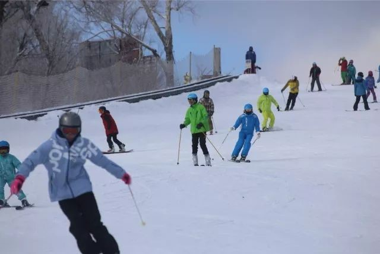
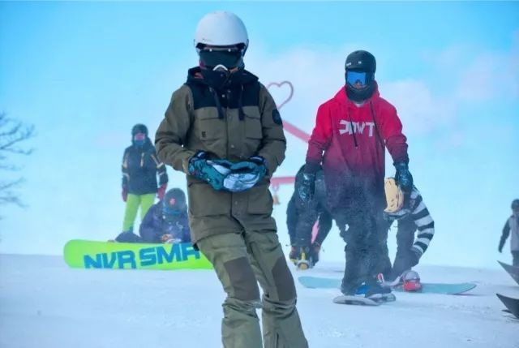
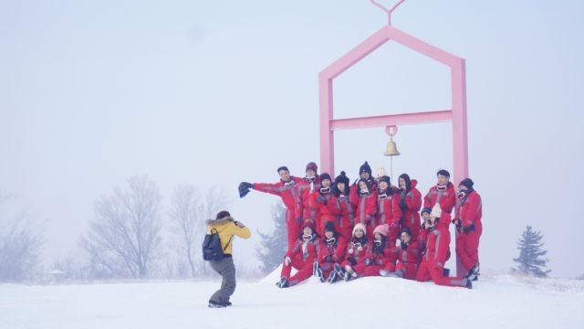

滑雪是一项全身的运动，能够对神经系统进行全方位的锻炼和提高。在给你带来速度享受同时，也锻炼了你的平衡能力、协调能力和柔韧性。在滑雪的过程中，需要身体各个关节的配合，才能在滑行中取得最好的平衡效果。因此在滑雪时几乎所有的关节，都能起到比较良好的锻炼作用，激活僵硬的身体，使得身体的柔韧性增强。
Skiing is a whole body sport, which can exercise and improve the nervous system. It will give you the pleasure of speed while also exercising your balance, coordination and flexibility. In the process of skiing, the coordination of the various joints of the body is needed in order to achieve the best balance effect in skiing. Therefore, when skiing, almost all joints can play a good role in exercise, activate the stiff body and enhance the flexibility of the body.
滑雪属于有氧运动，冬季滑雪，人在室外的冷空气中运动，对身体氧气运输系统的考验更大，更能在无形中锻炼心血管缩张的能力，增强心肺功能。
Skiing is an aerobic exercise. In winter skiing, people exercise in the cold air outdoors, which puts a greater test on the oxygen transport system of the body. It can also exercise the ability of cardiovascular contraction and expansion virtually and enhance the cardiopulmonary function.
尝试一项新运动之后会感觉筋疲力尽，特别是全身都要调动起来的锻炼。在极度的疲累中，大脑和身体都会想要得到良好的休息，相信经过一天的滑雪，你会碰到枕头就想睡！
Trying a new exercise can leave you feeling drained, especially if you're exercising your whole body. When you're extremely tired, both your mind and body want a good rest, and after a day of skiing, you'll hit the pillow and feel sleepy!